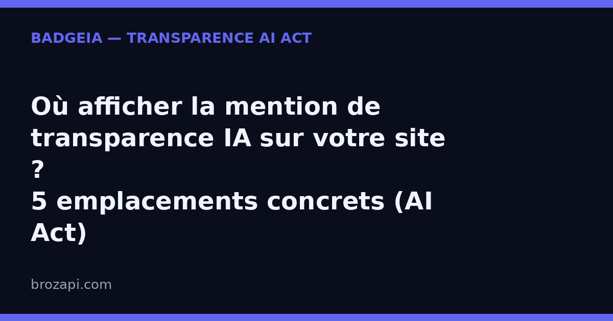

Où afficher la mention de transparence IA sur votre site : 5 emplacements concrets (AI Act)

Publié le · Lecture : 6 minutes · Par l'équipe Brozapi
Depuis le 2 août 2026, l'article 50 de l'AI Act impose d'informer vos visiteurs lorsqu'ils interagissent avec une intelligence artificielle : chatbot, assistant virtuel, texte ou image générés par IA. Vous savez peut-être déjà quoi afficher. La vraie question pratique, celle qui bloque au moment de mettre en place, c'est où.
Car une mention de transparence ne vaut que si elle est vue. Une ligne noyée au fond de vos mentions légales, que personne ne lit, ne remplit pas l'exigence d'une information « claire, visible et compréhensible » au moment de l'interaction. À l'inverse, la bonne information placée au bon endroit rassure votre visiteur sans alourdir votre site.
Voici les 5 emplacements concrets, du plus visible au plus discret, avec pour chacun ce qu'il faut savoir.
1. Le bandeau en haut du site
Un bandeau (ou « bannière ») discret en haut de page signale en une phrase que le site peut utiliser l'IA. C'est l'option la plus visible : elle touche tous les visiteurs, sur toutes les pages.
Points forts : visibilité maximale, impossible à manquer, idéal pour un site qui affiche des contenus générés par IA (descriptions produits, articles de blog, visuels).
Points d'attention : un bandeau permanent peut fatiguer. La bonne pratique est de le rendre léger (une phrase, un lien « en savoir plus ») et facile à fermer. Pensez à vos visiteurs réguliers : l'information doit rester accessible sans devenir envahissante.
2. Le pied de page (footer)
Le footer est l'emplacement le plus courant et le plus simple à maintenir. Une ligne « Ce site utilise des contenus générés par IA » accompagnée d'un lien vers une page dédiée suffit.
Points forts : présent sur toutes les pages, discret, rapide à mettre en place sur n'importe quel CMS ou site statique.
Limite : le footer ne suffit pas à lui seul pour un chatbot. Si un visiteur discute avec votre assistant IA, l'information doit apparaître au moment de l'échange, pas dans un coin de page qu'il ne regarde pas. Considérez le footer comme un complément, jamais comme l'unique emplacement.
3. La fenêtre du chatbot elle-même
C'est l'emplacement le plus important si votre site utilise un chatbot (Intercom, Crisp, Tidio, Chatbase, Botpress…). L'obligation de transparence porte sur l'interaction : c'est là qu'elle se joue.
Concrètement :
- Affichez un indicateur visible dans la fenêtre de chat : un libellé comme « Assistant IA », « Réponses générées par IA » ou une pastille dédiée.
- Faites en sorte que le premier message du bot se présente comme une IA, plutôt que d'imiter un prénom humain sans le préciser.
- Évitez de faire croire à un humain : c'est exactement le piège que l'article 50 cherche à prévenir.
La règle simple : le visiteur ne doit jamais avoir à deviner qu'il parle à une machine.
4. La page registre IA publique
Une page dédiée, publique et datée, qui liste vos outils IA déclarés : c'est votre preuve de bonne foi en cas de contrôle. C'est l'approche que propose BadgeIA avec sa page registre : un inventaire clair de ce que vous utilisez, avec une date, accessible en un clic depuis votre site.
Points forts : c'est l'emplacement qui démontre une démarche organisée, pas seulement une mention isolée. En cas de contrôle, une page datée vaut mieux que des captures d'écran dispersées.
Bon usage : la page registre vient compléter les emplacements visibles. Elle est la destination du lien « en savoir plus » de votre bandeau ou de votre footer. Elle ne remplace pas la mention au moment de l'interaction.
5. Les mentions légales
Les mentions légales restent un point de passage obligé pour tout ce qui est documentaire : nature de l'outil, cadre juridique, informations de l'éditeur. Y ajouter une phrase sur votre usage de l'IA est une bonne pratique.
Limite claire : c'est l'emplacement le moins efficace à lui seul. Une information dans les mentions légales n'est pas « visible au moment de l'interaction ». Les visiteurs n'y vont pas avant de cliquer sur votre chatbot.
La bonne combinaison : ne choisissez pas un seul emplacement
Aucun emplacement ne suffit seul, et aucun n'est universellement le meilleur. La bonne approche est de combiner, selon votre site :
- Vous utilisez un chatbot → la fenêtre du chatbot est votre priorité n°1, complétée par un footer discret.
- Vous publiez des contenus générés par IA (textes, images) → un bandeau léger en haut de page, avec un lien vers votre page registre.
- Vous voulez une solution simple et durable → BadgeIA génère un badge de transparence à coller en une ligne, plus une page registre publique datée. Vous couvrez ainsi le signal visible et la preuve documentée.
L'essentiel à retenir : l'information doit être visible avant ou dès le début de l'interaction, dans la langue de vos visiteurs. Si vous devez retenir une seule règle de placement, c'est celle-là.
Des formulations prêtes à l'emploi
Pour vous faire gagner du temps, voici des phrases concrètes, par emplacement. Adaptez-les à votre ton, mais gardez l'idée : une information claire, sans jargon.
Pour un bandeau : « Ce site peut utiliser des contenus générés par intelligence artificielle. En savoir plus. »
Pour un footer : « Certains contenus de ce site sont générés ou assistés par IA. Consultez notre page transparence. »
Pour la fenêtre du chatbot : « Assistant IA — les réponses sont générées par une intelligence artificielle et peuvent être imprécises. »
Pour la page registre : « Outils IA utilisés sur ce site, déclarés le [date] : [liste des outils]. »
Ces formulations ne sont pas imposées par la loi (qui n'exige pas de texte mot à mot), mais elles couvrent l'essentiel : le visiteur sait, tout de suite et sans effort, qu'une IA est en jeu.
Questions fréquentes
La mention dans mes mentions légales suffit-elle ?
Non. L'information doit être visible au moment de l'interaction. Une ligne noyée dans une page juridique n'est pas « claire et distincte » au sens de l'article 50. Les mentions légales sont un bon complément documentaire, pas un emplacement suffisant.
Je n'ai pas de chatbot, seulement quelques images générées par IA. Où afficher ?
Un bandeau léger en haut de page ou une ligne dans le footer, avec un lien vers une page qui détaille votre usage, suffisent. L'important est que l'information soit visible et compréhensible.
Puis-je cumuler plusieurs emplacements ?
Oui, et c'est même recommandé. Un signal visible (bandeau ou fenêtre de chat) doublé d'une page registre datée couvre à la fois l'obligation d'information et la preuve de bonne foi.
Combien de temps faut-il pour mettre ça en place ?
Pour un site simple, quelques minutes suffisent : une phrase dans le footer et un indicateur dans votre chatbot. Une solution comme BadgeIA (badge à coller en une ligne + page registre) règle le signal visible et la documentation en une seule fois.
Cet article est fourni à titre informatif et ne constitue pas un conseil juridique. Pour une analyse de votre situation, consultez un professionnel du droit.
Guides par plateforme : Intercom · Crisp · Tidio · Chatbase · Botpress